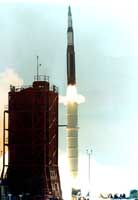

|
Over-unity device installed in Minuteman Missile -
patented by Westinghouse
 A frequency converter using 64 transistor stages and similar sophisticated feedforward and feedback mechanisms was placed in the original Minuteman missile, then deliberately modified to stop its demonstrated COP > 1.0 performance. Very quietly, Westinghouse engineers then obtained several patents surrounding the technology, but no further mention of it appears in the literature. (Note: COP stands for Coefficient of Performance)
J. H. Andreatta, "High Power Switching Amplifier Wherein Energy is Transferred to a Tuned Circuit During Both Half Cycles," U.S. Patent No. 3,239,771, Mar. 8, 1966; Tom L. Dennis, Jr., "Highly Efficient Semiconductor Switching Amplifier," U.S. Patent No. 3,239,772, Mar. 8, 1966; Heber J. Morrison, "Square Wave Driven Power Amplifier," U.S. Patent No. 3,815,030, June 4, 1974. DeSantis et al. showed that feedback systems with a multipower open loop chain can produce COP > 1.0 performance. Romano M. DeSantis et al., "On the Analysis of Feedback Systems With a Multipower Open Loop Chain," Oct. 1973, AD 773188, available through the U.S. National Technical Information System. Excerpted from "On Extracting Electromagnetic Energy from the Vacuum," IC-2000, by Tom Bearden. In the Westinghouse Minuteman converter, all the output side electronics (i.e., beyond the output of the transistor array frequency converter) started failing out there in the field, taking the missiles down. After much investigation, it was found that the units were putting out some 105% as much energy as they received. Some were exhibiting COP = 1.15. The receiving electronics on the other side of the converter could not accept that much. Corporate officials came down hard on the engineers to fix the problem, so they just put in limiting diodes, etc. and spoiled the feedback and the ping pong. That brought the thing down to about 95% efficient, and the electronics on the output side quit blowing out. Everybody was happy, and everybody continued to use those "crippled overunity units" in the Minuteman missile. Westinghouse quietly filed five or six patents around such transistor arrays with sophisticated feedforward and feedback, and that was the end of that. Everybody "knows" that you cannot produce an EM system that puts out more than you yourself input! We have all been educated in the arbitrarily crippled Lorentz-regauged version of the Heaviside-Maxwellian equations that only deal with EM systems that have already been violently wrenched into local equilibrium with their vacuum energy exchange. |